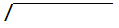

一.初一数学
七年级数学上册
七年级数学下册
二.初二数学
多项式除法(又叫"长除法"), 据说是初二学的, 但我没印象啊???
注意: 分子最高次项 ≥ 分母最高次项, 才用这个除法!
$分子 \over 分母$(分子÷分母)
$2x^3 - x^2 + 4x + 1 \over {x^2 - x - 2}$
解:
$2x + 1$ 1.最高项相除:${2x^3 \over x^2} = 2x$
$x^2 - x - 2$

$2x^3 - \ \ x^2 + 4x + 1$
$2x^3 - 2x^2 - 4x$ 2.被除数 $* \ 2x$, 就等于这行
———————————————— 3.相减
$x^2 + 8x + 1$ 4.相减结果, 最高项再次相除:${x^2 \over x^2} = 1$
$x^2 - \ \ x - 2$ 5.被除数 $* \ 1$, 就等于这行
———————————————— 6.相减
$9x + 3$ 7.最后余数
∴原式 = $2x + 1 + {9x + 3 \over {x^2 - x - 2}}$
八年级数学上册
11.第十一章 三角形(还未完成)
12.第十二章 全等三角形(还未完成)
13.第十三章 轴对称(还未完成)
15.第十五章 分式(还未完成)
八年级数学下册
三.初三数学
九年级数学上册
22.第二十二章 二次函数(还未完成)
23.第二十三章 旋转(还未完成)
24.第二十四章 圆(还未完成)
25.第二十五章 概率初步(还未完成)
九年级数学下册